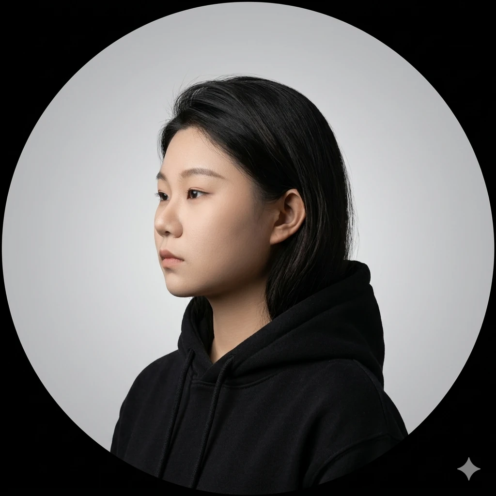

About
工程能力驱动 AI 落地
我具备扎实的计算机基础与良好的工程实践能力，在后端开发的基础上逐步深入 AI 应用方向，形成了以"工程能力驱动 AI 落地"的技术路径。在实习和项目中不仅关注功能实现，更重视系统的稳定性、性能与可扩展性。
2022.09 – 2026.06
GPA：3.43 / 4.0
数据结构
操作系统
计算机网络
数据库原理
连续获得校级奖学金及国家励志奖学金 · 多次获评"三好学生" · 以第一作者身份在《环球科学》发表学术论文
语言与框架
- 熟练掌握 Java 及 Spring Boot，具备完整后端开发与服务拆分能力
- 熟悉 RESTful API 设计规范
- 了解 MySQL 数据库设计与优化（索引、分页、慢查询分析）
AI 与 LLM 工程
- 理解大语言模型基本原理（Transformer 架构 / Attention 机制）
- 具备 RAG 系统构建经验，熟悉 Redis 缓存与检索结果优化
- 熟悉 Prompt 设计与上下文工程方法，能结合 RAG 场景进行效果优化
- 能够独立完成知识库构建、模型调用封装与效果调优
智慧校园 AI 助手系统（RAG 架构）
后端核心开发者
江苏传智播客教育科技股份有限公司
2025.12 – 2026.02
- 参与构建基于 RAG 架构的智慧校园 AI 问答系统，实现对校园多源数据的语义检索与智能应答
- 负责核心数据服务模块开发，完成用户请求解析、上下文拼接、模型调用封装等关键流程
- 构建知识检索链路，通过缓存策略与异步请求优化将接口响应延迟降低约 35%
- 持续优化 Prompt 设计与多轮对话控制策略，提升模型输出质量
- 建立日志监控与异常处理机制，确保多用户并发场景下的系统稳定运行
- 借助 Cursor 辅助完成部分样板代码编写，模块开发周期缩短约 40%
我具备扎实的计算机基础与良好的工程实践能力，在后端开发的基础上逐步深入 AI 应用方向，形成了以“工程能力驱动 AI 落地”的技术路径。
在实习和项目经历中，我不仅关注功能实现，更重视系统的稳定性、性能与可扩展性，并持续探索如何将大模型能力真正应用于实际业务场景中。
面对快速发展的技术浪潮，我始终保持学习的主动性，未来希望在 Java 后端与 AI 应用方向持续深耕，参与构建具备实际价值的智能系统。
计算机科学与技术专业，系统学习数据结构、网络、操作系统和数据库。
负责文旅 + 定制出行小程序原型，沉淀为论文成果。
负责 Spring Boot + MySQL 后端，完成数据库建模和核心业务流程。
参与智慧校园 RAG 问答系统，负责数据服务、上下文拼接和接口优化。
目标方向为 Java 后端开发、AI 应用工程和业务系统开发。